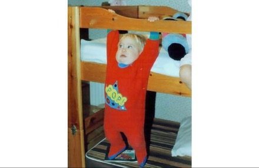

“People are suffering and dying under the torture of the fantasy self they’re failing to become." --Will Storr
There are really only a few reasons why anyone gives a darn about attaining enlightenment.
1- They think it's the right thing to do- something that is supposed to be done, if they are to live properly. Kind of like joining the military because one wants to be a good citizen and thinks it's the right hting to do. This is the Following the Rules of Living Right motive.
2- They think there's some wonderful experience out there that they're missing out on, some amazing bit of chocolate they haven't tasted that everyone else is raving about. We can call this one the FOMO reason for seeking enlightenment.
3- They want to feel better, and not be anxious, not be depressed, not react in the face of triggers. This is the Blissful Despite Any Circumstances reason.
By far, motive-for-enlightenment #3 is the most common. It's the reason why people ask spiritual teachers what their life is like behind the scenes. The seeker is asking if the enlightenment magic actually succeeds in allowing the teacher to feel good all the time.
Often if the answer is not satisfactorily encouraging, the seeker will move on to another teacher, one hopefully with more effective magic.
Because basically humans just want to feel good. All. The. Time.
And regardless of the merits of feeling only one thing, most people very much want this.
So when folks focus on the grand, the vast, the bigness of enlightenment, when what is desired is actually quite small, well, we can see how they may be looking for answers in the wrong direction. We can see how they might not attain what they spend decades trying to get. Simply because it's not where they are looking for it.
So in the interests of helping some actually get what they want, today's Mind-Tickler looks at the small, instead of the incomprehensibly large.
Let's play with one single, particular thought.
Which is about as small as things can get. After all, "nothing", which is what thought is, is pretty dang small.
So which thought is so common, so basic, so micro-fast and usually unseen, yet appears to influence so many 'bad' feelings?
Which thought, in some version or combination or words, actually brings the pain so many seekers are trying to escape via perpetual bliss?
Let's call it out into the light.
Because so much depression, so much anxiety, so much guilt, shame and lack of okness, boils down to the few words that indicate...
"I'm not doing this right."
There's personal failure in those words. There's fault in those words. There's blame, guilt, helplessness and just plain badness in those words.
There's self in those words.
And whether the words are exactly these, or "I'm bad, I'm wrong" or something like, they bring attention...
Right to the self.
As the center of all things.
Which always feels awful. Though as a strategy for the perpetuation of suffering, there's none better.
I mean, we certainly can't ignore the feelings that come with all that self-centeredness.
So we have to get busy trying to make them go away.
Enter the enlightenment search.
When maybe we would do better to notice how much of our pain is driven by this thought.
Instead of chasing the sky.
Luckily, simply noticing can shift things. Simply noticing how this thought lurks under every bad feeling, every panic attack, every depression, every too-many-chips, every week spent on the couch trying to force ourselves to get up and do something- can shift things.
It can even shift the enlightenment search itself.
After all, what would happen to the yearning for enlightenment if the thought, “I’m not doing this right,” didn’t exist?
There'd be no need for it.
There'd be no need for the bad feelings that come when we think we're not doing the enlightenment search right, either.
Now maybe you’re thinking, “No no no, this is stupid and wrong, Mind-Tickler! One thought can’t be the cause of all this suffering.” Or maybe it seems like nothing this simple can be helpful.
And hey, what do I know, maybe you’re right.
What I do know is this:
Despite all the inquiry and therapy and medication and meditation and satsangs and podcasts and Facebook consciousness groups and prayer and affirmations and manifesting...
There are still so many folks- possibly even you - who remain anxious, depressed, compulsive, unmotivated.
Tracking this thought may be the one thing that hasn’t been tried.
And wouldn't it be something if we actually could experience a peace anyway, and a lighter grasp on the need to have only the right outside circumstances...
Without having to sit in every satsang or read every spiritual book and quote known to man...
For decades.
I mean, wouldn't it paradoxically be something,
To actually attain the peace so long sought, so long desired,
At last,
By going small instead of big.
"Spiritual awakening is the difficult process whereby the increasing realization that everything is as wrong as it can be flips suddenly into the realization that everything is as right as it can be." --Alan Watts
Click here to get your every week.
Going Small
